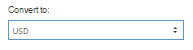

Section: Home Reports Chargeback Ratio
Для просмотра соотношения возвратов выбирете правило
Скриншот :

Список правил представлен ниже
| Rule | Description |
|---|---|
| Chargeback Date | Дата возврата |
| Transaction Date | Дата транзакции |
| Chargeback Reason Code | Код причины возврата |
| Chargeback Reason Message | Пояснение возврата |
| Test Mode | Тестовая транзакция |
| Transaction Source | Источник транзакции. Это может быть API, HPP, MPORTAL, ACQUIRER, IPORTAL, UNKNOWN |
| Currency | Валюта транзакции |
| Original currency | Оригинал валюты транзакции |
| Merchant Account | Название аккаунта в админ панели |
| Merchant Name | Название мерчанта в админ панели |
| Bank | Банк |
| Chargeback Type | Retrieval request, First chargeback, Second - Third chargeback, Representment, Chargeback reversal, Lost representment |
| Chargeback Status | OPENED, REPRESENTED, REVERSED, CLOSED |
| Card Brand | Бренд карты. На пример: VISA, MasterCard, American Express |
| MID | MID транзакции |
| Card Type | Тип карты. На пример: Business credit card, Secured credit card, Prepaid card, Digital card. |
| Card Level | Информация по поводу уровня карты |
| Card Country | Страна карты |
| Card Country ISO3 | Страна карты по стандарту ISO3 |
Фильтры и их назначения ниже
| Filter | Description |
|---|---|
| equal | Значение равно |
| between | Значение между двумя разными |
| not equal | Значение не равно |
| not equal or is null | Не равно либо ноль |
| less | Значение меньше |
| less or equal | Меньше либо равно |
| greater | Значение больше |
| greater or equal | Больше либо равно |
| today | Сегодня |
| day ago | День назад |
| yesterday | Вчера |
| this week | На этой неделе |
| week ago | Неделю назад |
| last week | Прошлую неделю |
| 2 weeks ago | 2 недели назад |
| last 2 weeks | Последние две недели |
| this month | В этом месяце |
| month ago | Месяц назад |
| last month | Последний месяц |
| last 2 month | Последние два месяца |
| last 6 month | Последние 6 месяцев |
| this year | В этом году |
| year ago | Год назад |
| last year | За последний год |
| in | Поиск по значению В (выбирете значение) |
| not in | Обратное от "IN" |
| not in or null | Обратное от "IN" или ноль (выбирете значение) |
| begins with | Начать с |
| doesn't begin with | Значение обратное от begins with |
| doesn't begin with or null | Значение обратное от begins with либо ноль |
| contains | Значение состоит |
| doesn't contain | Значение не состоит |
| doesn't contain or null | Значение не состоит либо ноль |
| ends with | значение заканчивается c |
| doesn't end with or null | значение не заканчивается или ноль |
| is empty | Пустое |
| is not empty | Не пустое |
| is null | Ноль |
| is not null | Не ноль |
| wildcard |
Пометка | Вы можете использовать несколько правил вместе
Следующий шаг - выбрать настройки отчета
| Settings | Description | Скриншот |
|---|---|---|
| Group by |
|
|
| Report Type | Вывод в браузере либо скачать в CSV файл. | |
| Use acquirer data | Использовать дату покупателя | |
| Convert to | Конвертировать в валюту :
|
 |
| Your custom reports | Сохраненный ранее образ отчета |
Пометка | Ваш сохраненный образ отчета правил и значений. Вы можете сохранить его и использовать в будующем.
Для создания нового выберете правила и фильтры и нажмите

В следующий раз ваш образ будет в "Your custom reports".